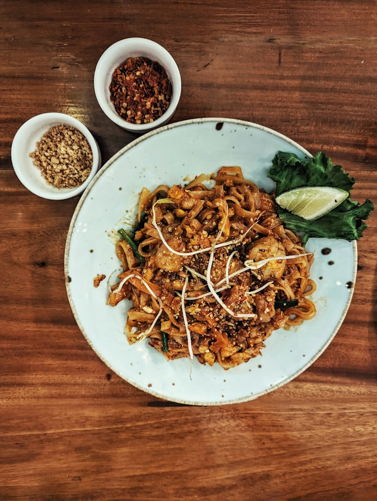

Home
Pad Thai

Photo by Hidden
on Unsplash
Description
A classic Thai stir-fried noodle dish with rice noodles, shrimp or chicken, eggs, vegetables, and a sweet-savory
tamarind sauce, garnished with peanuts and lime.
Ingredients
- 150g rice noodles
- 150g shrimp or chicken, sliced
- 2 eggs
- 2 cloves garlic, minced
- 1 cup bean sprouts
- 2 green onions, sliced
- 2 tbsp tamarind paste (or Pad Thai sauce)
- 1 tbsp fish sauce
- 1 tbsp soy sauce
- 1 tsp sugar
- 2 tbsp vegetable oil
- Crushed peanuts and lime wedges for garnish
Steps
- Prepare noodles: Soak rice noodles in warm water until soft, then drain.
- Cook protein & eggs: Heat oil in a pan, sauté garlic, add shrimp/chicken until cooked, then push aside and
scramble the eggs.
- Stir-fry noodles & sauce: Add noodles, tamarind paste, fish sauce, soy sauce, and sugar. Toss to coat
evenly.
- Add vegetables: Stir in bean sprouts and green onions, cook 1–2 minutes.
- Serve: Plate and garnish with crushed peanuts and lime wedges.